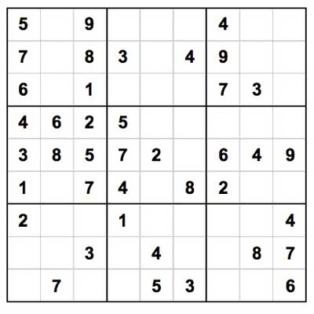

Sudoku

This is an article about an algorithm that automatically solves a sudoku. Its Backtrackingstyle with a couple additions to improve the Runtime.
Strategies like hidden singles detection and candidate elimination are employed to efficiently solve Sudoku puzzles. The algorithm iterates through possible solutions, utilizing techniques like backtracking when direct strategies cannot determine a unique solution.
The algorithm
The presented Javascript algorithm implements an efficient Sudoku solver algorithm. It represents Sudoku puzzles as 9x9 grids of integers, where 0 denotes empty cells. The script utilizes a sudoku-object to represent a sudoku. It contains most importantly an array of the values. In addition there are multiple units representing sets of cells which are not allowed to have the same value. And there are peers, which combine for every coordinate the relevant sets.
The sudoku class encapsulates various solving strategies. It initializes Sudoku objects from given initial values and precomputed candidate sets. Strategies like hidden singles detection and candidate elimination are employed to efficiently solve Sudoku puzzles. The algorithm iterates through possible solutions, utilizing techniques like backtracking when direct strategies cannot determine a unique solution.
Candidate elemination is a common intuitive strategie to solve sudokus. Each empty cell in Sudoku has a list of "candidates," which are possible numbers that could fill that cell. Checking rows, columns, and blocks: To eliminate candidates, we look at each row, each column, and each block (the 3x3 sub-squares) in the Sudoku grid. For each non-empty cell in a row, column, or block, we can exclude the number in that cell from the candidates of the other empty cells in the same row, column, or block. For example, if there's already a 5 in a row, we can exclude the possibility of any other empty cell in that row being a 5. This process is repeated for each row, column, and block in the Sudoku grid. By doing this elimination of candidates, we can reduce the list of possible numbers for each empty cell in the Sudoku grid. This overall reduces the solution possibilities and makes the Sudoku puzzle easier to solve.
Hidden Singles are numbers which only have one allowed spot in a given unit. If u find a suitable number you can decrease the effort dramatically. The key to efficiency is that we compute the candidates before and while we are testing multiple solutions, we dont have to compute candidates over and over again (peers dictonary).